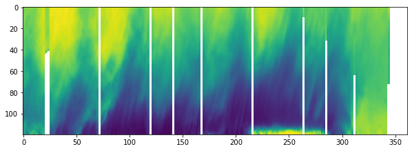
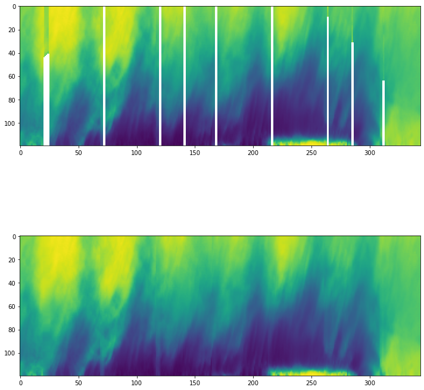

[1]:
import numpy as np
import re
import matplotlib.pyplot as plt
Usage¶
To use orbconformal in a project:
[2]:
import orbconformal as oc
print(oc.__version__)
0.0.1
Example of data cleaning¶
[3]:
tc_rad = oc.tc_rad
[4]:
values_only = ["RAD"+re.sub("\.0","",rad) for rad in list(tc_rad.columns)[1:]]
new_cols = ["time"] + values_only
[5]:
tc_rad = tc_rad.drop(axis = 0, index = 0)
new_column_dict = dict(zip(list(tc_rad.columns),
list(new_cols)
))
tc_rad = tc_rad.rename(columns = new_column_dict)
tc_rad_mat = np.array(tc_rad[values_only])
[6]:
fig, ax = plt.subplots(figsize = (10,12))
ax.imshow(tc_rad_mat.T[::-1])
[6]:
<matplotlib.image.AxesImage at 0x7fa7ba116340>

Linear Interpolation¶
A little clean up first¶
First, need to figure out which rows are missing:
[7]:
na_info = np.isnan(tc_rad_mat).mean(axis = 1)
and identify and get ride of the rows at the end that don’t have anything in them.
[8]:
if (na_info == 1)[-1]:
empty_final_rows = np.sum(np.cumsum((na_info > 0)[::-1]) == \
np.arange(1,na_info.shape[0]+1, dtype = int))
[9]:
tc_rad_clean = tc_rad.drop(
list(np.arange(na_info.shape[0]-empty_final_rows+1,
na_info.shape[0]+1)))
tc_rad_mat_clean = tc_rad_mat = np.array(tc_rad_clean[values_only])
actual linear interp tidying¶
[10]:
na_info_clean = np.isnan(tc_rad_mat_clean).mean(axis = 1)
[11]:
updated = oc.linear_interp(tc_rad_mat_clean, na_info_clean)
[12]:
fig, ax = plt.subplots(nrows = 2, figsize = (10,12))
ax[0].imshow(tc_rad_mat_clean.T[::-1])
ax[1].imshow(updated.T[::-1])
fig.tight_layout()
